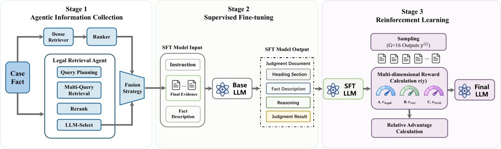

TL;DR — Pipeline en 3 étages pour rédiger un jugement pénal chinois complet à partir des faits : (1) retrieval agentique de statuts (planification multi-requêtes + rerank + sélection LLM, chacun optimisé par GRPO), (2) SFT LoRA pour le format, (3) GRPO sur le générateur avec un reward scalaire pondéré dit « rubrique ». Entraîné et évalué sur JuDGE (2 004 / 501) [§sec-setup].
Claim principal — « Judge-R1 significantly outperforms state-of-the-art baselines in both legal accuracy and generation quality » [abstract] ; concrètement, sur JuDGE, par rapport au meilleur baseline SFT à modèle de base identique : Referencing F1 0,6659 → 0,7231 (QW-2.5-3B) et 0,6402 → 0,7379 (QW-3-4B) ; Convicting F1 0,8974 → 0,9280 et 0,9080 → 0,9400 ; Prison acc. 0,6440 → 0,6625 et 0,6224 → 0,6573 ; et côté retrieval P@5 0,4535 → 0,6383, R@5 0,5529 → 0,7806 contre le Law Retriever [Tab. 1, Tab. 2].
⚠️ Mise en garde d'entrée, décisive pour notre usage. Le mot « rubrique » du titre est trompeur. Il n'y a ni juge LLM, ni critère en langue naturelle, ni grille rédigée par un juriste. La « rubrique » est une somme pondérée de métriques automatiques référencées sur le jugement réel : F1 d'entités juridiques extraites par regex, BERTScore contre les sections du jugement de référence, et deux heuristiques de longueur/répétition sur le <think>. Elle est donc entièrement dépendante de la conclusion : 60 % du reward récompense le fait de retrouver la condamnation, les articles, la peine et l'amende effectivement prononcés par le tribunal [§Rubric-Aware Reward Design]. C'est l'inverse exact d'une rubrique notant le raisonnement sans trancher le litige.
bash/train_rl.sh : --num_train_epochs 1].max_src 3 000 sans MRAG / 6 000 avec, max_tar 4 096 ; le modèle LoRA est mergé avant le GRPO, qui est ensuite full-parameter.)⚠️ Précision importante : le générateur n'est pas un agent. C'est du RLVR single-turn sur une génération longue. Le mot « agentic » ne concerne que le pipeline de retrieval, exécuté hors de la boucle RL du générateur (l'evidence set est précalculé et figé dans le prompt).
instruction || evidence retrouvée $\mathcal{E}_f$ || description des faits $f$ [§3.2]. Le prompt exact n'est donné nulle part — ni dans le corps, ni en annexe (le papier n'a aucune annexe). ⚠️ Gênant pour un papier dont la contribution est un reward et un format.bash/train_rl.sh, non dit dans le papier) : --max_length 3000 (6 000 en mode MRAG) et --max_completion_length 4096.<think> : plafond serré. Le code gère explicitement le cas d'un <think> non refermé par troncature (strip_think, repo train/src/rl_plugin1.py), ce qui indique que la troncature se produit en pratique.bert-base-chinese 12 couches, extracteurs regex). Déterminisme : le reward est déterministe ; la génération est stochastique (--temperature 0.8). Pas de reset ni de timeout au sens env interactif.rl_plugin1.py, absent du papier) — c'est là que se cache le vrai contrat de format :DataSegmentXingshi.parse() segmente le document en reason / judgment. En cas d'échec, les deux sections valent "" → BERTScore = 0 sur les deux → perte sèche de toute la composante texte (30 %). Le papier le dit en une phrase : « If a section is missing or cannot be extracted, we assign a score of 0 to that section » [§Rubric-Aware Reward Design].calc_time_sum / calc_amt_sum sur exception → 0 (log warning). ⚠️ Un échec de parsing de la peine est donc indiscernable d'une peine de 0 : _percent_for_judge(exp, 0) renvoie 0 sauf si la référence vaut 0 aussi, auquel cas 1,0. Bruit de reward non mesuré.<think> malformé autre que le thinking_score = 0.0 si le modèle est « thinking » et n'émet pas de balises.C'est la section décisive. Réponse courte : le vérifieur n'est ni une rubrique, ni validé, ni indépendant de la conclusion.
Hybride entièrement automatique et entièrement référencé (reference-based), sans juge LLM et sans reward model. Trois composantes, somme pondérée [Éq. 2, §Rubric-Aware Reward Design] :
$$r(j) = w_1 \cdot r_\text{legal}(j) + w_2 \cdot r_\text{struct}(j) + w_3 \cdot r_\text{logic}(j)$$
avec $w_1 = 0{,}6$, $w_2 = 0{,}3$, $w_3 = 0{,}1$ [§sec-setup].
Le papier donne les 3 poids de tête et dit que « internal sub-weights [...] are configurable hyperparameters (see Sec. 4) » — mais la Sec. 4 ne donne aucun sous-poids. Ils sont introuvables dans le papier. Je les recopie depuis le code publié (train/src/rl_plugin1.py, classe LegalDocRewardImproved, vérifié le 2026-09-29), en les marquant clairement [repo] :
| Composante | Définition (papier) | Sous-poids [repo] |
|---|---|---|
| $r_\text{legal}$ (0,6) | F1 sur citations statutaires extraites ; F1 sur chefs d'accusation extraits ; score de matching numérique pour peine et amende ; 0 en cas de conflit catégoriel (acquittement vs condamnation) [§Rubric] | law_article_weight=0.35 (F1 articles) · crime_weight=0.30 (F1 chefs) · time_weight=0.20 (peine) · amount_weight=0.15 (amende) |
| $r_\text{struct}$ (0,3) | segmentation en sections reasoning et judgment, BERTScore moyen contre les sections de référence ; 0 si section manquante [§Rubric] | moyenne simple des deux BERTScore F1 ; bert-base-chinese, num_layers=12, tokenisation jieba, pas de rescaling baseline |
| $r_\text{logic}$ (0,1) | $\min(1, S_\text{len} + S_\text{rep})$ sur le contenu des balises <think> ; « discourage circular reasoning, excessive repetition, or overly short reasoning traces » [§Rubric] |
voir 3.4 ci-dessous |
Score de matching numérique, recopié du papier [§Rubric-Aware Reward Design] :
$$S(A,B) = \max\left(0,\ 1 - \frac{|A-B|}{\max(A,B,1)}\right)$$
Le code ajoute deux garde-fous absents du papier : retour 0 si les signes diffèrent, et retour 0 si (exp-10000)*(act-10000) < 0 — le commentaire du code d'évaluation est explicite : « Both must either have or lack the death penalty ». 10 000 est donc la valeur sentinelle de la peine capitale / perpétuité (evaluation/calc.py, calculate_percent_for_judge).
$r_\text{logic}$, recopié du code (_evaluate_thinking_quality, repo) — aucun de ces seuils n'apparaît dans le papier, qui renvoie à une Sec. 4 qui ne les contient pas :
si aucun échantillon du batch n'a de balises <think> -> 0.5 (score neutre, modèle non-thinking)
si modèle thinking mais pas de <think> produit -> 0.0
S_len (50 %) : 100 <= len(think) <= 600 -> +0.50
50 < len < 100 ou 600 < len < 1000 -> +0.30
len >= 1000 -> + max(0, 0.30 - (len-1000)/3000)
S_rep (50 %) : nb de lignes commençant par "\n-" <= 5 -> +0.50
<= 10 -> +0.30
<= 20 -> +0.10
score = min(1.0, S_len + S_rep)
⚠️ Trois conséquences, toutes importantes et non discutées par les auteurs :
1. Le reward plafonne la réflexion à 600 caractères. Un trace de raisonnement long est activement pénalisé. C'est l'opposé de ce que vise la littérature RLVR (allongement du raisonnement). Sur un jugement pénal multi-chefs, 600 caractères chinois est très court.
2. Terme saturable et trivial à satisfaire : n'importe quel <think> de 100–600 caractères avec ≤ 5 puces obtient 1,0. Après quelques dizaines de steps le terme est constant → contribution nulle à l'advantage.
3. Terme strictement inerte pour Qwen2.5-3B : le modèle n'est pas « thinking », donc has_any_think=False et thinking_score = 0.5 pour tous les membres du groupe. Un décalage constant disparaît exactement dans $A^{(i)} = (r - \mu_G)/(\sigma_G+\epsilon)$. La composante « Reasoning Quality » n'existe pas pour un des deux backbones du papier, et le papier ne le mentionne pas. Le reward effectif y est $0{,}6\,r_\text{legal} + 0{,}3\,r_\text{struct} + \text{const}$.
Pénalité de décodage : --repetition_penalty 1.1 au sampling [repo]. ⚠️ Masque la dégénérescence répétitive au lieu de la laisser punir par le reward — le reward ne peut donc pas être crédité d'avoir résolu la répétition.
get_crime, get_penalcode_index_from_text, calc_time_sum, calc_amt_sum) : jamais mesurée, ni dans ce papier ni signalée comme mesurée dans JuDGE. Ce sont des extracteurs regex/lexique sur du chinois juridique ; leur taux d'erreur se propage intégralement et de façon corrélée dans le reward et dans la métrique d'évaluation.Direct sans aucun entraînement [Tab. 2] — la plage utile est ~0,80→0,90, soit un signal ténu occupant 30 % du reward.⚠️ Verdict sur le vérifieur : aveugle au sens propre. Il mesure la coïncidence avec un document, pas la validité d'un raisonnement. Sa seule garantie est que la cible est un vrai jugement rendu par un vrai tribunal — ce qui est une garantie de provenance, pas de correction, et qui ne dit rien de la qualité du texte produit par le modèle lorsqu'il diverge.
Sans objet : il n'y a pas de juge LLM. Aucun prompt de juge, aucune rubrique en langue naturelle, aucune annexe. Rien à recopier.
Aucun test. Le vérifieur n'est ni attaqué, ni sondé, ni audité. Le mot « hacking » n'apparaît pas dans le papier. Voir §5 pour mon analyse.
Le papier annonce [§3.1] : - QueryGen : chaque requête est exécutée, le ranking résultant est noté contre les labels gold de JuDGE via MRR et Recall@50. - LLM-Select : reward combinant P@5, rappel sur l'evidence gold présente dans le pool, et pénalité douce sur le nombre de statuts sélectionnés, « tuned on the validation set ».
⚠️ Le code publié ne dit pas la même chose (repo README, tableau du module « LLM Agent Retrieval ») :
- QueryGen : 0.05*Format + 0.25*Diversity + 0.70*DenseScore — ni MRR ni Recall@50.
- LawSelect : 0.45*R@5 + 0.35*P@5 + 0.15*R@10 + 0.05*Quantity.
Divergence papier ↔ artefact publié à signaler ; ni l'une ni l'autre version n'est chiffrée dans le papier.
GRPO [guo2025deepseek], appliqué en full-parameter sur le modèle SFT-LoRA mergé [repo train_rl.sh : TRAIN_TYPE=full, MODEL=output/sft_*/merge]. Implémentation : ms-swift, swift rlhf --rlhf_type grpo avec un plugin de reward externe (--external_plugins train/src/rl_plugin1.py --reward_funcs legal_doc_reward).
Ce qui diffère du GRPO standard : rien d'algorithmique. Le papier ne propose aucune modification de GRPO. La seule équation donnée est l'advantage group-relative standard [Éq. 1] : $$A^{(i)} = \frac{r(j^{(i)}) - \mu_G}{\sigma_G + \epsilon}, \qquad \mu_G = \frac{1}{G}\sum_{k=1}^{G} r(j^{(k)})$$ Normalisation par $\sigma_G$ conservée (pas de variante Dr.GRPO / DAPO). L'objectif complet — ratio d'importance, clipping, terme KL — n'est jamais écrit. La contribution est le reward, pas l'optimiseur.
Ce que donne le papier [§sec-setup] : 1 epoch, LR $5\times10^{-6}$, KL $\beta = 0{,}05$, $G = 16$ générations par input, poids 0,6 / 0,3 / 0,1, bf16, 4× A800 80 Go, « default Hugging Face configurations ». Retriever : AdamW, LR $2\times10^{-5}$, fp16. SFT LLM : LR $2\times10^{-5}$, bf16.
Le reste est introuvable dans le papier ; je le complète depuis bash/train_rl.sh [repo], en le marquant comme tel :
| Hyperparamètre | Valeur | Source |
|---|---|---|
| Algorithme | GRPO, full-parameter, ms-swift | §sec-setup + [repo] |
| Taille de groupe $G$ | 16 | §sec-setup (confirmé --num_generations 16) |
| KL $\beta$ | 0,05 (référence = politique SFT mergée) | §sec-setup (confirmé --beta 0.05) |
| Advantage | $(r-\mu_G)/(\sigma_G+\epsilon)$, normalisé | Éq. 1 |
| Clipping $\epsilon$ | non précisé (défaut ms-swift) | — |
| On/off-policy | on-policy ; --use_vllm false par défaut → génération in-process, pas de replay |
[repo] |
| Longueur max prompt | 3 000 (6 000 en MRAG) | [repo] |
| Longueur max génération | 4 096 | [repo] |
| Batch | per_device_train_batch_size 1 × gradient_accumulation_steps 16 × 4 GPU = 64 complétions / step optimiseur |
[repo] |
| LR | $5\times10^{-6}$ | §sec-setup + [repo] |
| Warmup | warmup_ratio 0.03 |
[repo] |
| Température de sampling | 0,8 | [repo] — absente du papier |
repetition_penalty |
1,1 | [repo] — absente du papier |
| Nombre de steps | ≈ 501 | ⚠️ dérivé par moi : $2\,004 \times 16 / 64 = 501$ ; corroboré par le chemin d'exemple checkpoint-501 dans le README du repo. Non annoncé dans le papier. |
| Précision | bf16 | §sec-setup + [repo] |
| Seeds | 1 seul run, seed non précisé | — |
Rien n'est rapporté. Aucune instabilité mentionnée, aucune astuce de stabilisation décrite, aucune variante essayée puis abandonnée. ⚠️ Deux indices indirects d'un dispositif non trivial : (i) le KL $\beta = 0{,}05$ est élevé pour du GRPO récent (souvent $\beta \in [0, 10^{-3}]$), ce qui tient la politique près du SFT et comprime les gains possibles ; (ii) repetition_penalty 1.1 au décodage, qui est typiquement ajouté après avoir constaté de la dégénérescence.
4× NVIDIA A800 80 Go [§sec-setup]. Durée, GPU-heures et coût : « non précisé ». Ordre de grandeur que l'on peut poser : 2 004 prompts × 16 rollouts × jusqu'à 4 096 tokens ≈ 1,3 × 10⁸ tokens générés pour l'unique epoch, plus un passage BERTScore (deux sections × 32 064 complétions) et jieba sur chaque sortie.
Aucune courbe. Pas de courbe de reward, pas de courbe de longueur de réponse, pas d'entropie, pas de décomposition du reward par composante au cours du temps. --report_to tensorboard est configuré [repo] mais rien n'est publié. ⚠️ Pour un papier dont la thèse est « le reward multi-objectif force l'équilibre entre dimensions », l'absence de la courbe par composante est le chiffre manquant le plus coûteux : impossible de savoir si le modèle a monté $r_\text{legal}$ en sacrifiant $r_\text{struct}$, ou l'inverse.
Le papier n'en mentionne aucun. Ni le mot « reward hacking », ni « failure mode », ni « degenerate » (hors la phrase générique du §Rubric : le terme $r_\text{logic}$ sert « to discourage degenerate behaviors such as circular reasoning, excessive repetition, or overly short reasoning traces » — une intention, sans aucune mesure ni détection). Aucun exemple qualitatif de sortie. Aucune analyse d'erreur.
⚠️ Est-ce crédible vu la conception du reward ? Non. Voici les cas que la conception rend prévisibles, dont un est directement visible dans leur propre Tab. 2.
| Backbone | Referencing Recall | Referencing Precision | F1 |
|---|---|---|---|
| QW-2.5-3B — SFT | 0,6130 | 0,7287 | 0,6659 |
| QW-2.5-3B — Judge-R1 | 0,7589 (+0,1459) | 0,6905 (−0,0382) | 0,7231 |
| QW-3-4B — SFT | 0,5753 | 0,7216 | 0,6402 |
| QW-3-4B — Judge-R1 | 0,7739 (+0,1986) | 0,7052 (−0,0164) | 0,7379 |
Le rappel explose, la précision baisse sur les deux backbones, le F1 monte parce que le gain de rappel domine. C'est la signature exacte de l'over-citation. - ⚠️ Et le papier affirme le contraire : « The superior Precision and F1 scores demonstrate that the proposed Agentic Legal Information Collection mechanism reduces retrieval noise » [§5.2]. Sur Referencing, Judge-R1 a la plus mauvaise précision ou presque : 0,6905 contre 0,7288 (Direct) et 0,7287 (SFT) pour QW-2.5-3B ; 0,7052 contre 0,7216 (SFT) pour QW-3-4B. Le README du repo revendique par ailleurs corriger « over-citation » — le résultat publié indique que le RL l'aggrave par rapport au SFT. - Correction appliquée : aucune. Pas de pénalité de sur-citation côté générateur (elle n'existe que dans le reward de LawSelect, en amont).
Direct [Tab. 2] le confirme.<think> de 100–600 caractères avec ≤ 5 puces. C'est un incitatif explicite à raccourcir et à aplatir le raisonnement. Pour un modèle « Thinking » (Qwen3-4B), c'est une pression directe à sous-raisonner.<think>, pas d'exemple.Voir §3.4 point 3 : score constant à 0,5 → annulé par la normalisation group-relative. Le papier présente pourtant $r_\text{logic}$ comme une composante active des deux configurations. Non signalé par les auteurs.
get_penalcode_index_from_text scanne l'ensemble du document. Rien n'empêche le modèle d'énumérer des numéros d'articles dans une ligne de boilerplate hors de toute analyse pour gonfler le rappel. Non testé, non mesuré.Aucun rapporté, ni positif ni négatif. Absence totale d'analyse qualitative.
ddp_find_unused_parameters false [repo].--use_vllm false) ; un mode vLLM server est prévu mais désactivé par défaut [repo train_rl.sh].BERTScorer résident et un cache LRU des features de référence (RL_REF_CACHE_SIZE=16384, RL_BERT_BATCH_SIZE=16) — la présence même de ce cache indique que le reward était un coût sensible.
3. jieba + regex sur chaque complétion, en Python, non parallélisé.--save_steps 250 --save_only_model true --save_total_limit 5 [repo] → sur ≈501 steps, 2 checkpoints intermédiaires. Le papier ne dit pas quel checkpoint est évalué ; le README pointe checkpoint-501, c'est-à-dire le dernier. ⚠️ Pas de sélection sur validation.| Chiffre / claim annoncé | Où il est annoncé | Source dans le papier | Verdict |
|---|---|---|---|
| « significantly outperforms state-of-the-art baselines in both legal accuracy and generation quality » | Abstract | Tab. 2 | sur-généralisé. Faux pour Fine Acc. sur QW-2.5-3B : Judge-R1 0,4857 < RAG+SFT 0,4977 et < SFT 0,4971. Faux pour Referencing Precision sur les deux backbones (0,6905 < 0,7288 Direct ; 0,7052 < 0,7216 SFT). Vrai pour Convicting F1, Referencing F1/Recall, METEOR et BERTScore des deux sections. |
| « significantly » | Abstract | — | introuvable : aucun test statistique, aucun intervalle de confiance, un seul run nulle part comparé. |
| « our agentic framework provides superior retrieval performance compared with standard RAG systems » | Intro + §5.1 | Tab. 1 | confirmé sur les 4 métriques : P@5 0,6383 vs 0,4535 ; P@10 0,3878 vs 0,3509 ; R@5 0,7806 vs 0,5529 ; R@10 0,9159 vs 0,8262 (Law Retriever). |
| « The superior Precision and F1 scores demonstrate that the proposed Agentic Legal Information Collection mechanism reduces retrieval noise » (à propos de Referencing) | §5.2 | Tab. 2 | contredit. Referencing Precision QW-2.5-3B : Judge-R1 0,6905 vs SFT 0,7287 et Direct 0,7288. QW-3-4B : Judge-R1 0,7052 vs SFT 0,7216. Le tableau lui-même met ces baselines en gras. |
| « Judge-R1 secures the highest scores in both METEOR and BERTScore » (sections Reasoning et Judgment) | §5.2 | Tab. 2 | confirmé : 0,5660 / 0,8853 / 0,6558 / 0,9036 (QW-2.5-3B) et 0,5363 / 0,8855 / 0,6476 / 0,9042 (QW-3-4B), tous les meilleurs de leur colonne et backbone. |
| « achieves the best overall performance across both model backbones, obtaining the strongest results on most key metrics » | §5.2 | Tab. 2 | confirmé (formulation prudente : 11 des 12 colonnes en QW-3-4B, 10 des 12 en QW-2.5-3B). |
| « substantial gains over the strong SFT baseline » sur Penalty et Convicting | §5.2 | Tab. 2 | sur-généralisé. Convicting F1 : +0,0306 et +0,0320 (réel mais modeste). Prison : +0,0185 et +0,0349. Fine : −0,0114 sur QW-2.5-3B, +0,0701 sur QW-3-4B. « Substantial » est généreux, et faux pour Fine/QW-2.5-3B. |
| « Extensive experiments » | Abstract | §sec-setup, Tab. 1–2 | sur-généralisé : 1 dataset, 2 backbones ≤ 4 B, 1 seed, 0 ablation, 0 intervalle. |
| 2 505 paires, 2 004 train / 501 test | §sec-setup | §sec-setup | confirmé et arithmétiquement cohérent. |
| Poids $w_1,w_2,w_3 = 0{,}6 / 0{,}3 / 0{,}1$ | §sec-setup | Éq. 2 | confirmé, et corroboré par le code publié (legal_weight=0.60, text_weight=0.30, thinking_weight=0.10). |
| $G=16$, KL $\beta=0{,}05$, LR $5\times10^{-6}$, 1 epoch, 4× A800 | §sec-setup | §sec-setup | confirmé, et corroboré par bash/train_rl.sh. |
| « internal sub-weights [...] are configurable hyperparameters (see Sec. 4) » | §Rubric-Aware Reward Design | §sec-setup | introuvable : la Sec. 4 ne contient aucun sous-poids. (Le code donne 0,35/0,30/0,20/0,15.) |
| « All interval thresholds and reward increments [de $r_\text{logic}$] are treated as configurable hyperparameters (see Sec. 4) » | §Rubric-Aware Reward Design | §sec-setup | introuvable : aucun seuil n'est donné. (Le code donne 50/100/600/1000 caractères et 5/10/20 puces.) |
| $w_\text{agent}=2{,}0$, $w_\text{std}=1{,}0$ « based on validation performance » | §Multi-route Fusion | — | introuvable : aucune courbe ni tableau de validation ; aucun split de validation n'est par ailleurs annoncé (§sec-setup ne décrit que train/test). |
| « length penalty is tuned on the validation set », $N_{\min}$, $m$, top-$k$ | §3.1 | — | introuvable : aucune de ces valeurs n'est chiffrée. |
| QueryGen évalué « using MRR and Recall@50 » | §3.1 | — | introuvable dans le papier ; ⚠️ contredit par le code publié, dont le README donne 0.05*Format + 0.25*Diversity + 0.70*DenseScore. |
Divergences papier ↔ code publié (à garder en tête, toutes vérifiées le 2026-09-29) : sous-poids de $r_\text{legal}$ et seuils de $r_\text{logic}$ absents du papier ; température 0,8 et repetition_penalty 1,1 absents ; nature full-parameter du GRPO après merge LoRA absente ; modèle d'agent Qwen2.5-7B absent ; reward de QueryGen différent.
Table complète des deux backbones (recopiée de [Tab. 2], écarts Judge-R1 − meilleur baseline calculés par moi) :
| Backbone | Métrique | Meilleur baseline (lequel) | Judge-R1 | Écart absolu |
|---|---|---|---|---|
| QW-2.5-3B | Prison Acc. | 0,6440 (SFT) | 0,6625 | +0,0185 |
| QW-2.5-3B | Fine Acc. | 0,4977 (RAG+SFT) | 0,4857 | −0,0120 |
| QW-2.5-3B | Convicting F1 | 0,9102 (RAG+SFT) | 0,9280 | +0,0178 |
| QW-2.5-3B | Referencing F1 | 0,6659 (SFT) | 0,7231 | +0,0572 |
| QW-2.5-3B | Referencing Prec. | 0,7288 (Direct) | 0,6905 | −0,0383 |
| QW-2.5-3B | Reasoning BERTS. | 0,8696 (SFT) | 0,8853 | +0,0157 |
| QW-2.5-3B | Judgment BERTS. | 0,8872 (SFT) | 0,9036 | +0,0164 |
| QW-3-4B | Prison Acc. | 0,6224 (SFT) | 0,6573 | +0,0349 |
| QW-3-4B | Fine Acc. | 0,4648 (RAG+SFT) | 0,5144 | +0,0496 |
| QW-3-4B | Convicting F1 | 0,9340 (RAG+SFT) | 0,9400 | +0,0060 |
| QW-3-4B | Referencing F1 | 0,6753 (RAG+SFT) | 0,7379 | +0,0626 |
| QW-3-4B | Referencing Prec. | 0,7216 (SFT) | 0,7052 | −0,0164 |
| QW-3-4B | Reasoning BERTS. | 0,8741 (SFT) | 0,8855 | +0,0114 |
| QW-3-4B | Judgment BERTS. | 0,8829 (SFT) | 0,9042 | +0,0213 |
Retrieval [Tab. 1] : Agentic 0,6383 / 0,3878 / 0,7806 / 0,9159 (P@5 / P@10 / R@5 / R@10) contre Law Retriever 0,4535 / 0,3509 / 0,5529 / 0,8262 et BM25 0,1501 / 0,1024 / 0,1958 / 0,2649.
⚠️ Lecture d'ensemble : le gain réel est concentré sur le rappel de citations (+0,05 à +0,06 de F1), c'est-à-dire précisément la dimension la plus directement optimisée par le reward et la plus exposée à la sur-citation (§5.1). Les gains sur Convicting (+0,006 à +0,018 de F1, sur une base déjà à 0,91–0,93) et sur BERTScore (+0,011 à +0,021 sur une échelle dont le plancher est 0,80) sont faibles, et sans variance rapportée on ne peut pas les distinguer du bruit de seed.
Aucune évaluation OOD. Aucune mesure de transfert. Un seul dataset (JuDGE), un seul domaine (pénal chinois), une seule juridiction. Pas de test sur le civil, l'administratif, une autre langue, ou un autre benchmark juridique. La question « entraîner sur JuDGE aide-t-il ailleurs » n'est pas posée.
Aucune, dans le papier. ⚠️ C'est le défaut le plus grave pour notre usage : Judge-R1 modifie simultanément (a) le retriever, (b) l'ajout du GRPO, (c) les trois composantes du reward. Aucune de ces trois contributions n'est isolée. En particulier :
- Impossible de savoir ce que le GRPO apporte à retriever constant (il n'y a pas de ligne « SFT + retrieval agentique, sans RL »).
- Impossible de savoir ce que chaque composante du reward apporte ($r_\text{legal}$ seul ? sans $r_\text{struct}$ ? sans $r_\text{logic}$ ?), alors que c'est la contribution revendiquée par le titre.
- ⚠️ Le code publié, lui, supporte 9 configurations (direct icl sft mrag rl sft_mrag sft_rl mrag_rl sft_mrag_rl, bash/eval.sh), donc les ablations ont très probablement été calculées et ne sont pas rapportées. Le format short paper explique, mais ne répare pas.
Deux tailles seulement (3 B et 4 B), et ce sont deux familles différentes (Qwen2.5-Instruct vs Qwen3-Thinking) — le contraste ne mesure donc pas la taille. Aucun effet de scaling isolé. Pas de variation du nombre de tâches ni du compute. Aucun baseline de modèle frontière (GPT/Gemini/DeepSeek) alors que JuDGE en évaluait.
rl_plugin1.py importe crime_extraction.get_crime, law_extraction.get_penalcode_index_from_text, judge_extraction.calc_time_sum/calc_amt_sum et DataSegmentXingshi depuis le dossier evaluation/, et _percent_for_judge est identique à calculate_percent_for_judge de evaluation/calc.py. Judge-R1 optimise par descente de gradient exactement la fonction qui le note ; les baselines non. Ajouter : contamination non testée sur un corpus de jugements publics, aucune validation humaine du vérifieur.evidence = 1 / 6 — seule la case repro est vraie. Les cinq autres sont fausses, pas n.a. : c'est un papier empirique, il aurait structurellement pu porter des seeds, des ablations et une validation du vérifieur (le code montre qu'il en avait les moyens).
Plausible mais fragile — à répliquer avant de s'y appuyer. La direction est la bonne et le pipeline est réel et reproductible. Mais le résultat central ne peut pas être cru tel quel : le reward et la métrique d'évaluation sont la même fonction, aucune ablation ne sépare retriever / RL / composantes du reward, il n'y a ni seed ni intervalle, et le seul gain vraiment large (rappel de citations) porte la signature d'une sur-citation que le texte nie explicitement.
⚠️ Ce pour quoi le papier reste utile malgré evidence = 1 : il est, à ma connaissance dans cette revue, le seul à faire tourner du GRPO de bout en bout sur un livrable juridique long et argumenté, avec un reward composite entièrement publié. Il vaut comme cas d'étude de conception — y compris par ses erreurs, qui sont exactement celles que nous risquons de commettre.
Une seule figure est extractible (figs/ ne contient que Pic_Overall.png ; src/Pic/ ne contient que Overall.pdf). Le papier ne comporte aucune figure de résultat, aucune courbe d'entraînement, aucune figure de failure mode.

Ce qu'il faut voir :
1. Les trois étages sont séquentiels et découplés. Stage 1 (collecte) produit une Final Evidence figée, Stage 2 (SFT) et Stage 3 (RL) la consomment telle quelle. Le générateur n'a jamais accès au retriever pendant le RL : ce n'est pas un agent de recherche, c'est du RLVR single-turn sur un prompt enrichi. Toute l'« agentivité » est dans la boîte bleue de gauche, hors boucle.
2. Stage 1 : deux routes en parallèle — dense retriever + ranker d'un côté, agent (Query Planning → Multi-Query Retrieval → Rerank → LLM-Select) de l'autre, réunies par une Fusion Strategy (RRF pondéré 2:1 [§3.1]).
3. Le document cible a quatre sections (Heading · Fact Description · Reasoning · Judgment Result), mais $r_\text{struct}$ n'en note que deux (Reasoning et Judgment) [§Rubric]. Les sections d'en-tête et de rappel des faits ne sont donc dans aucun terme du reward — une part substantielle du livrable n'est pas supervisée par le RL.
4. Stage 3 : $G=16$ échantillons → trois jauges $r_\text{legal}$ / $r_\text{text}$ / $r_\text{think}$ → advantage relatif. La figure nomme la troisième jauge $r_\text{think}$ alors que le texte écrit $r_\text{logic}$ et l'Éq. 2 $r_\text{logic}$ ; le §sec-setup l'appelle encore $r_\text{reason}$ et le code thinking_weight. Quatre noms pour un terme qui, sur Qwen2.5-3B, est constant et donc sans effet (§3.4).
(Pour la Tab. 2 complète, se reporter au PDF papers/2605.02011/paper.pdf — c'est un table* pleine largeur, non extractible en image.)
Nous sommes ici dans le domaine cible, mais dans le seul sous-régime du droit où une vérité terrain structurée existe gratuitement : la justice pénale chinoise publie les jugements, et un jugement contient un verdict discret (chefs), une liste d'articles, une durée et un montant. Harvey LAB et Vals Legal Research Bench n'ont pas cette structure. Le tableau ci-dessous est donc surtout un exercice de démarcation.
| Ingrédient | Choix du papier | Équivalent juridique (Gemini Law / Harvey LAB / Vals) | Transfert | Ce qui manque |
|---|---|---|---|---|
| Source des tâches | Corpus de jugements réels publiés, réutilisé tel quel (JuDGE, 2 004/501) [§sec-setup] ; coût humain nul | Décisions publiées (EUR-Lex, Légifrance, CourtListener), mémoires, avis — mais Harvey LAB/Vals sont des tâches de recherche et de rédaction pour un client, sans document de référence unique | adaptable pour la rédaction de décisions, non pour le conseil | Pour le conseil : il n'existe pas de « bonne réponse » publiée. Il faut fabriquer la référence (experts) ou changer de cible de reward. |
| Vérifieur — entités structurées | F1 sur articles et chefs extraits par regex du texte généré, contre ceux extraits de la référence [§Rubric ; law_extraction.py] |
Extraction et vérification de citations : articles, arrêts, considérants. Vérifiable contre une base d'autorités sans avoir besoin d'une réponse gold | direct, et c'est le meilleur emprunt | Leurs extracteurs ne sont jamais validés. Il faut mesurer précision/rappel de l'extracteur contre annotation humaine avant de s'en servir comme reward. Et il faut séparer existe / est citée correctement / est pertinente. |
| Vérifieur — conclusion | 60 % du reward = coïncidence avec le verdict réel (chefs, articles, peine, amende) | Aucun équivalent en conseil ; en contentieux, « prédire l'issue » ≠ « bien argumenter » | non transférable | C'est l'anti-patron à documenter : un reward conclusion-dépendant apprend la politique du corpus, biais compris, et ne dit rien de la qualité du raisonnement. |
| Vérifieur — qualité de rédaction | BERTScore contre les sections de référence, 30 % [§Rubric] | Similarité à un mémo modèle | non — à éviter | Plancher à 0,80 sur du texte formulaïque, jamais validé contre un jugement humain, récompense le mimétisme. À remplacer par un juge à rubrique en langue naturelle, validé. |
| Vérifieur — raisonnement | Heuristique de longueur (100–600 car.) + comptage de puces, 10 %, inerte sur un des deux backbones [§3.4] | — | non | Anti-patron n°2. Un terme de « qualité de raisonnement » qui ne regarde ni le contenu ni la validité n'est pas un terme de raisonnement. |
| Harness / outils | Single-turn, aucun outil au générateur ; retrieval précalculé figé dans le prompt [§3.2] | Gemini Law sera multi-turn, avec recherche d'autorités dans la boucle | non | Le papier ne dit rien du régime qui nous intéresse (recherche + rédaction dans la même trajectoire). Leur découplage est une simplification, pas un résultat. |
| Algo | GRPO ms-swift standard, full-param après merge LoRA, $G=16$, $\beta=0{,}05$, 1 epoch, T=0,8, 4 096 tokens de complétion [repo] | Idem | direct (rien de spécifique au droit) | $\beta=0{,}05$ est élevé ; aucun diagnostic d'entropie ou de longueur. Rien à apprendre côté optimiseur. |
| Curriculum | Aucun ; pas de filtrage de difficulté, pas de retrait des groupes à $\sigma_G=0$ | — | non (rien à transférer) | Le papier ne teste rien sur ce plan. |
| Anti-hacking | Aucun mécanisme, aucune mesure ; repetition_penalty au décodage |
— | non — leçon en creux | La sur-citation apparaît dans leur propre Tab. 2 sans être vue. Leçon : instrumenter précision et rappel séparément, et se méfier de tout reward en F1 sur des ensembles petits. |
Le reward par extraction d'entités structurées sur un livrable long ($r_\text{legal}$ dépouillé de sa dépendance au verdict) : on parse le texte long produit, on en extrait un objet structuré (citations, articles, juridictions, dates, montants), et on note cet objet. C'est le seul mécanisme de la littérature qui donne un signal dense, bon marché et vérifiable sur un livrable juridique de plusieurs milliers de tokens, sans expert dans la boucle à chaque rollout.
Reformulation pour notre cas : ne pas noter « le modèle arrive-t-il à la même conclusion que le gold » mais « chaque autorité citée existe-t-elle, est-elle citée exactement, est-elle encore en vigueur à la date pertinente, et est-elle effectivement mobilisée dans l'argument ». Les trois premiers sont entièrement vérifiables sans gold answer, et donc utilisables comme reward sur des requêtes juridiques ouvertes — ce qui est exactement le point dur de Harvey LAB / Vals.
Deux anti-patrons à documenter explicitement dans synthese/envs.md : (i) la similarité à un document de référence (BERTScore) comme composante de reward sur du texte formulaïque ; (ii) un terme « qualité de raisonnement » implémenté comme heuristique de longueur.
Objectif : tester si un reward de citation purement vérificationnel (sans réponse gold) déplace la précision de citation sans dégrader le fond, et mesurer la sur-citation.
Résultat attendu : rappel en hausse et précision en baisse si le reward est un F1 (réplication du §5.1) ; précision stable ou en hausse si l'on ajoute la pénalité explicite $-\gamma$ sur les citations inexistantes. Si la pénalité suffit, on tient un vérifieur juridique dense qui ne requiert aucune réponse gold — le résultat le plus utile qu'on puisse tirer de ce papier.
Second volet, à faire en parallèle et non après : mesurer la précision/rappel de l'extracteur de citations lui-même contre 200 documents annotés par un juriste. Judge-R1 ne l'a jamais fait, et sans ce chiffre le reward est aveugle exactement comme le leur.
Deux : 1. Disposons-nous, ou pouvons-nous construire, un index d'autorités faisant foi (existence, forme canonique de citation, statut en vigueur à une date, pour les juridictions visées par Harvey LAB et Vals) interrogeable à la vitesse d'un rollout ? C'est le prérequis matériel de tout reward de citation, et il est infra avant d'être recherche. 2. Sur les tâches Harvey LAB, qui écrit la rubrique et qui valide le juge ? Judge-R1 montre le coût de l'alternative : personne n'a écrit de rubrique, personne n'a validé le vérifieur, et le papier ne peut rien affirmer sur la qualité juridique de ses sorties. Il faut budgéter l'accord inter-juristes sur un échantillon avant de lancer le premier run de RL, pas après.